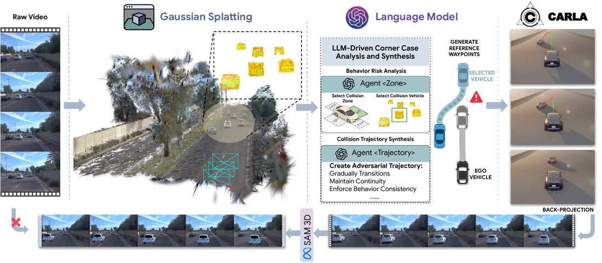

CARLA-GS: Decoupling Representation, Reasoning, and Physics Simulation for Autonomous Driving Corner-Case Synthesis
Gaussian Splatting reconstructs editable driving scenes, an LLM-based planner identifies risky interactions and generates adversarial trajectories, and CARLA ensures physically feasible vehicle motion for photorealistic corner-case synthesis.